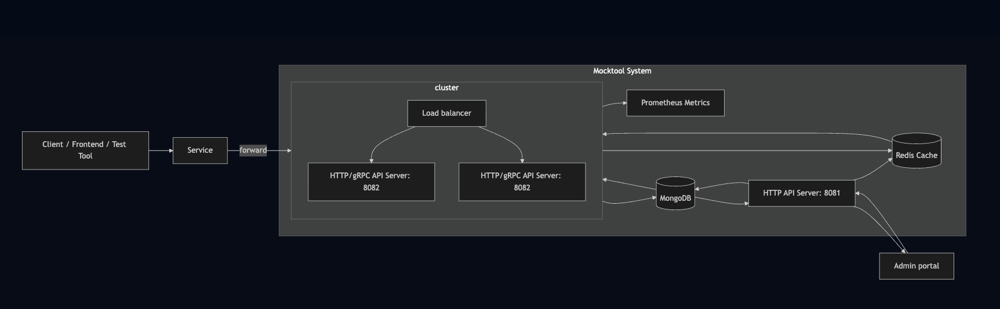
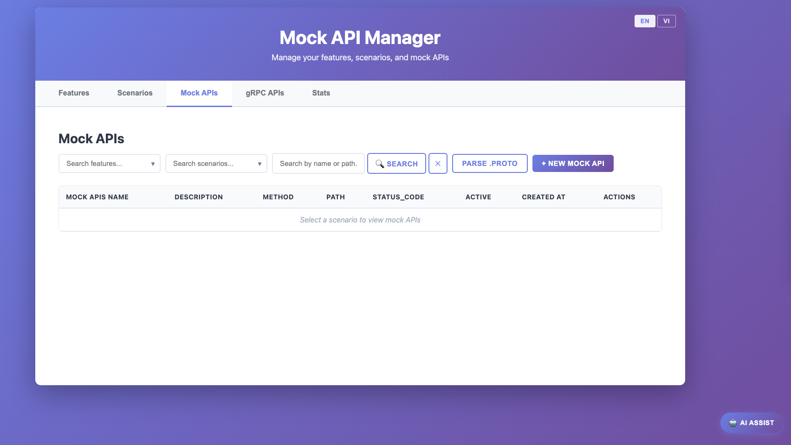
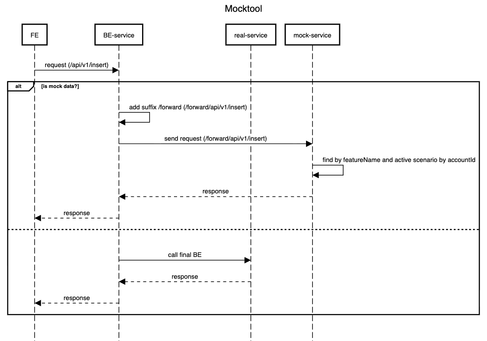

Scenario-driven mocking
Define multiple scenarios inside features and switch behavior without changing client code.
Open-source development tool
Control API responses using features, scenarios, account contexts, and request payload hash matching.

During software development, teams often face bottlenecks where frontend developers and testers must wait for backend developers to provide APIs or finalize responses.
When backend APIs change during development, frontend code must also be updated, causing delays. Most existing mock tools only hardcode responses by URL path and cannot filter requests by body content.
Most tools focus on simple URL-based mocks or API contract playback. Mocktool adds scenario-driven state, account-aware selection, and request body hash matching for more realistic development and QA workflows.
Define multiple scenarios inside features and switch behavior without changing client code.
Match requests by normalized JSON body hash to handle variations in request ordering.
Activate or deactivate mocks dynamically, and manage mock APIs through the web interface.
Mock both HTTP and gRPC services to support modern backend and microservice ecosystems.
The client sends an API call to your service. If mocking is enabled, request routing forwards to Mocktool.
Mocktool selects an active scenario by feature and account context, then matches the path, method, and payload hash.
The matching mock configuration is returned immediately or the request falls back to the real backend.

Configure features, scenarios, and mock APIs from the web interface in one place.
See how Mocktool routes requests through Redis and MongoDB for fast scenario-based lookup.

Follow the request lifecycle from client to mock decision and response delivery.
Run the backend, then open the web manager to configure features, scenarios, and mock endpoints.
go run main.go serviceOpen web/index.html in your browser and connect it to the running backend.
The repository contains the backend API server, mock management domain logic, repository adapters, and a lightweight web UI.